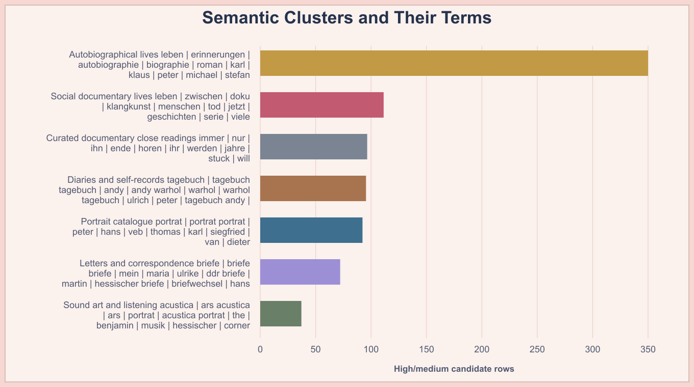
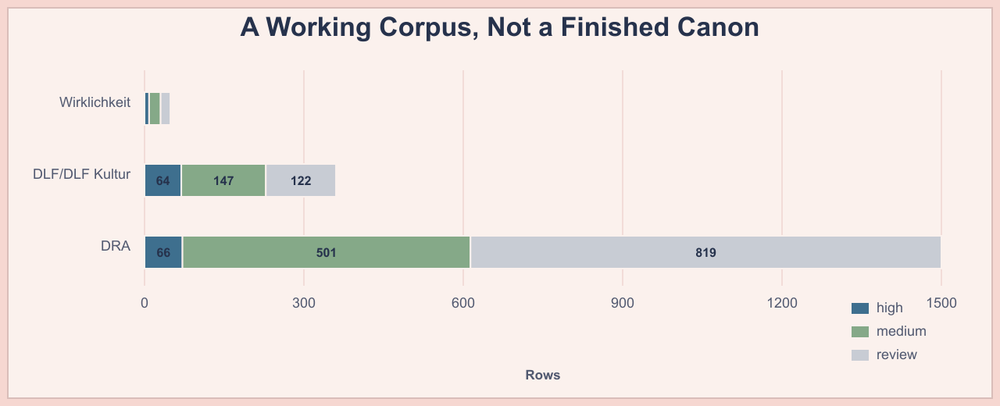
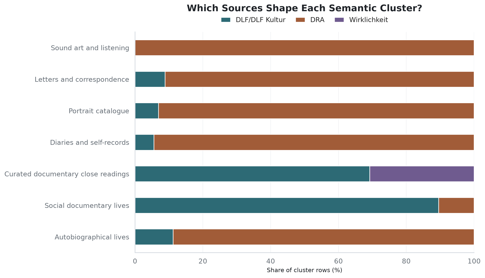
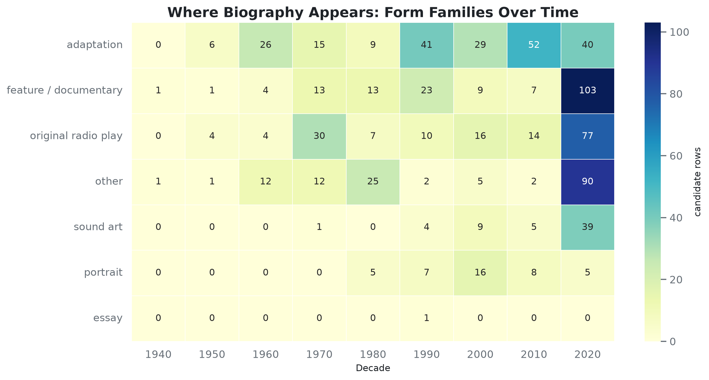
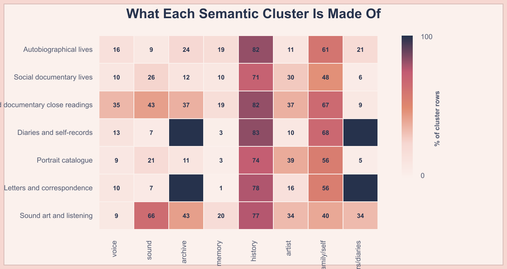
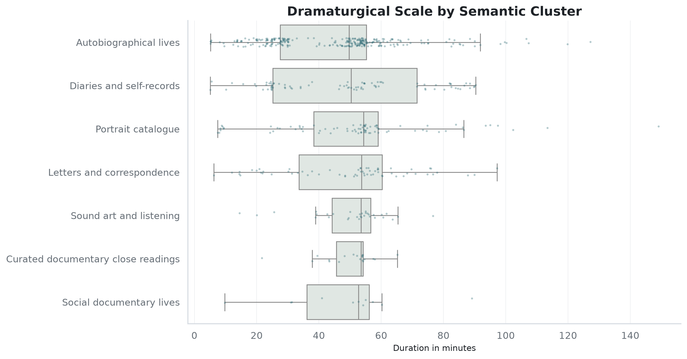

Cluster Terms
Clusters are labeled from their strongest terms, then checked against nearest exemplar works.

Computational radio studies
A German-first corpus of biographical radio drama, documentary feature, and sound art, explored through archive metadata and latent semantic representations.
This project turns scattered German radio archive and programme metadata into a corpus for studying biographical radio drama, documentary feature, and sound-based life writing. It is not a final canon; it is a navigational layer for finding patterns, absences, and promising cases for close listening.
The pipeline combines DRA/ARD Hoerspieldatenbank, Hoerspiel und Feature, and Wirklichkeit im Radio, then models the high/medium candidate subset with TF-IDF, truncated SVD embeddings, k-means clusters, and t-SNE projection. The analysis is tuned to acoustic memory: voice, sound material, archives, testimony, family history, and the institutional forms through which radio remembers.
DRA supplies the historical backbone; DLF/DLF Kultur adds recent programme pages; Wirklichkeit is small but unusually rich in critical commentary. The confidence levels mark discovery quality, not scholarly certainty.

The curated map now extracts whom each record appears to be about, then adds provisional life-focus tags: authors and literary figures, musicians and composers, artists, actors and performers, political or historical figures, family and intimate lives, women’s lives, collective histories, and ordinary/private persons. The subject line is the review anchor; the focus tags remain aids for sorting.
The semantic map embeds 603 curated life-writing records from cleaned descriptions and metadata. The horizontal field is the latent semantic projection; the vertical axis is year, so clusters can be rotated through time. Hover a point for title, year, source, subject, life focus, and cluster; click a point to keep its source card open. Shift-drag to move the map after zooming.
Clusters are labeled from their strongest terms, then checked against nearest exemplar works.

Some clusters are archive-led; others are shaped by DLF web descriptions or Wirklichkeit essays.

Biography is distributed across adaptation, feature, portrait, original radio play, and sound art.

The clusters differ by acoustic-memory makeup, not only by title keywords.

Duration is a rough proxy, but it helps distinguish compact portrait/catalogue pieces from longer documentary and autobiographical forms that invite extended memory work.
